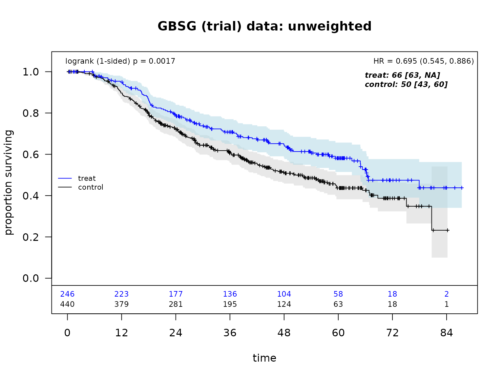
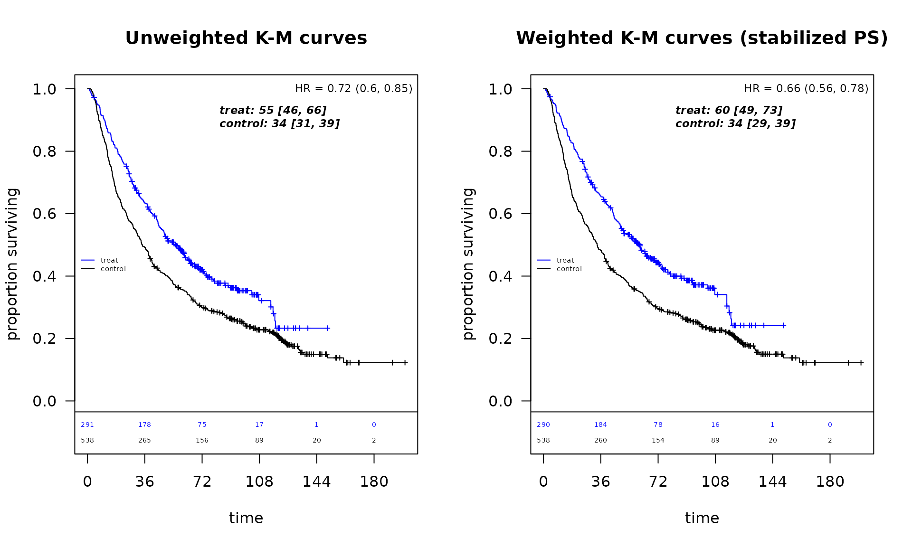
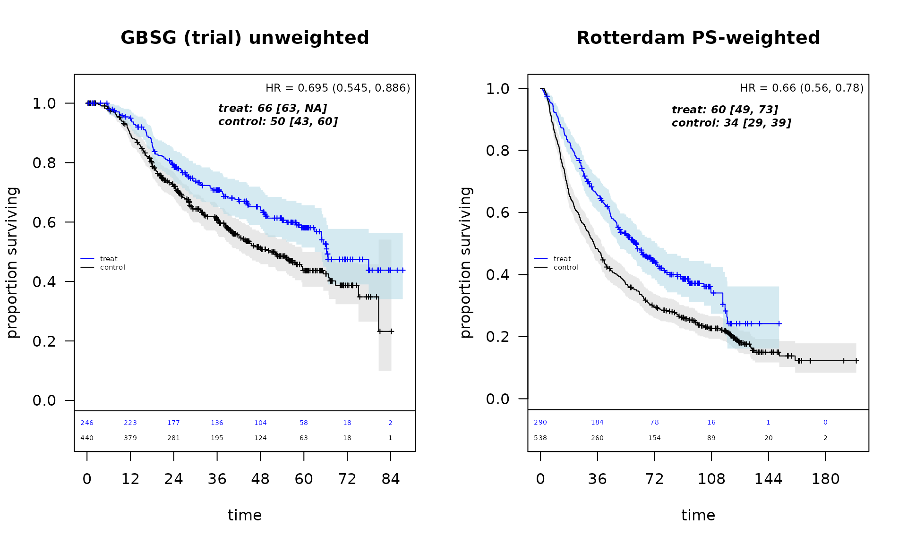
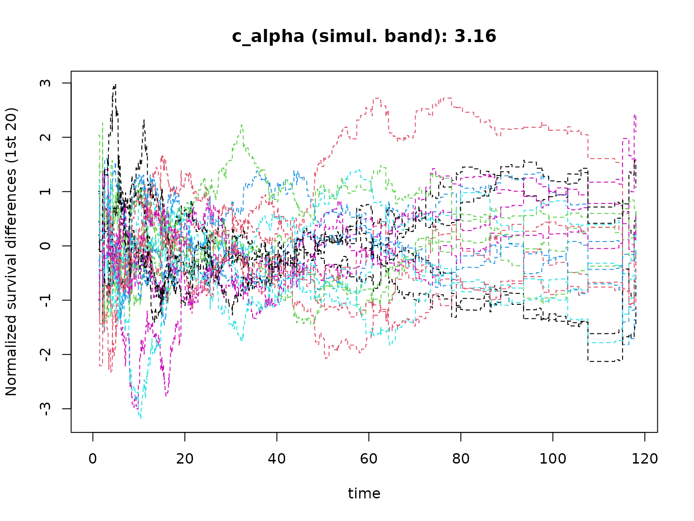
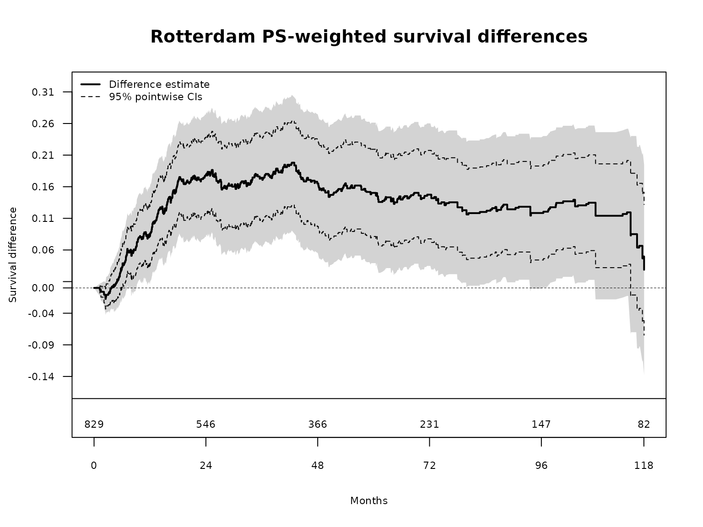
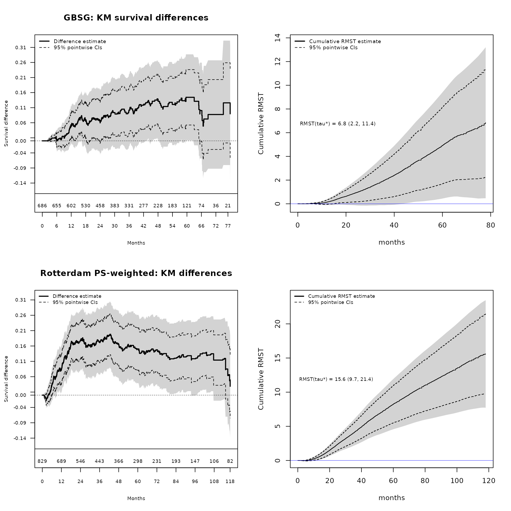

Martingale Resampling Applications in Survival Analysis
Larry Leon, Methodology Research
2026-11-20
Source:vignettes/articles/martingale_resampling_applications.Rmd
martingale_resampling_applications.Rmd
knitr::opts_chunk$set(
echo = TRUE,
message = FALSE,
warning = FALSE,
fig.width = 10,
fig.height = 6
)
options(warn = -1)
library(survival)
library(ggplot2)
library(weightedsurv)
# formatting of the numbers quoted in the text
fmt <- function(x, digits = 2) formatC(x, format = "f", digits = digits)Introduction
Martingale resampling (perturbation resampling) provides a powerful and flexible approach to inference in survival analysis. While asymptotic distributions are available for many common analysis methods, resampling-based inference
- May have greater accuracy in small samples, and
- Extends to complex processes where asymptotics are not readily available (Dobler et al. 2017).
This vignette demonstrates martingale resampling applications in the
weightedsurv package using two breast cancer datasets:
- GBSG — a randomized clinical trial evaluating hormonal therapy (Schumacher et al. 1994).
- Rotterdam — an observational study where propensity-score weighting is used to adjust for confounding (Royston and Altman 2013).
The examples include:
- Simultaneous confidence bands for survival (KM) arm differences
- Cumulative RMST curves with pointwise and simultaneous bands across follow-up (Zhao et al. 2016)
- Weighted analyses using propensity-score (IPTW) weights
Brief Review of Counting Processes
We observe where for subjects in group ():
- and
- The at-risk process:
- The counting process:
The aggregate counting processes count the observed events through time for the control () and experimental () arms.
The Weighted Log-Rank Test
The weighted log-rank (WLR) statistic of class is
where
,
as score_calculation() computes it (without a factor
;
such a constant factor would multiply the statistic and its standard
error alike, so the z-statistic is unchanged by it), with
Fleming–Harrington weights
,
,
.
Martingale Representation
Under the null, can be written as a sum of martingale integrals:
where the ’s can be replaced by the corresponding martingales under the null.
Resampling Recipe
The resampled statistic is constructed as:
where are i.i.d. random variables. The martingale increments are represented by independent standard normal random variables (independent of the data) that are multiplied by the observable counting process increments , with unknown parameters estimated by consistent estimators (Dobler et al. 2017).
GBSG Trial Data: Unweighted Analysis
Data Preparation
We use the GBSG randomized trial data from the survival
package, converting follow-up from days to months.
Counting Process Summary and Log-Rank Test
The df_counting() function prepares the survival data in
counting-process format and computes the standard log-rank test
(Fleming–Harrington
),
weighted log-rank statistics, and Cox model results.
dfcount_gbsg <- df_counting(
df = df_gbsg,
tte.name = tte.name,
event.name = event.name,
treat.name = treat.name,
arms = arms,
by.risk = 12,
scheme = "fh",
scheme_params = list(rho = 0, gamma = 0),
lr.digits = 4,
cox.digits = 3
)Kaplan-Meier Curves
plot_weighted_km(
dfcount = dfcount_gbsg,
conf.int = TRUE,
show.logrank = TRUE,
ymax = 1.05,
xmed.fraction = 0.725
)
title(main = "GBSG (trial) data: unweighted")
Rotterdam Observational Data: Propensity-Score Weighted Analysis
Data Preparation and Propensity Score Estimation
The Rotterdam dataset is observational, so we use inverse probability of treatment weighting (IPTW) with stabilized propensity-score weights to adjust for confounding.
gbsg_validate <- within(rotterdam, {
rfstime <- ifelse(recur == 1, rtime, dtime)
t_months <- rfstime / 30.4375
time_months <- t_months
status <- pmax(recur, death)
ignore <- (recur == 0 & death == 1 & rtime < dtime)
status2 <- ifelse(recur == 1 | ignore, recur, death)
rfstime2 <- ifelse(recur == 1 | ignore, rtime, dtime)
time_months2 <- rfstime2 / 30.4375
grade3 <- ifelse(grade == "3", 1, 0)
treat <- hormon
event <- status2
tte <- time_months
id <- as.numeric(1:nrow(rotterdam))
SG0 <- ifelse(er <= 0, 0, 1)
})
# node-positive women, as in the GBSG trial
df_rotterdam_np <- subset(gbsg_validate, nodes > 0)ps_weights() fits the logistic propensity score model
and returns the weights; type = "stabilized" gives
stabilized IPTW weights (the default is type = "ipw"). We
first look at all node-positive women:
pw_np <- ps_weights(
treat ~ age + meno + size + grade3 + nodes + pgr + chemo + er,
data = df_rotterdam_np,
type = "stabilized"
)
df_rotterdam_np$sw.weights <- pw_np$weights
ess_np <- df_counting(
df = df_rotterdam_np,
tte.name = tte.name,
event.name = event.name,
treat.name = treat.name,
arms = arms,
weight.name = "sw.weights"
)$ess
knitr::kable(ess_np, digits = c(0, 0, 1, 3))| group | n | ess | ratio |
|---|---|---|---|
| treat | 339 | 105.2 | 0.310 |
| control | 1207 | 1162.9 | 0.964 |
df_counting()$ess gives, by arm, the number of subjects,
the effective sample size
and their ratio; a low ratio means that a few subjects carry most of the
weight. Here the ratio of the treated arm is 0.31 and the largest weight
is 12.9: hormonal therapy went mostly to postmenopausal women without
chemotherapy (291 of the 339 treated women), and the few other treated
women receive large weights. The weighted example is therefore
restricted to postmenopausal women without chemotherapy, with the
propensity model fitted on those rows:
df_rotterdam <- subset(df_rotterdam_np, meno == 1 & chemo == 0)
pw <- ps_weights(
treat ~ age + size + grade3 + nodes + pgr + er,
data = df_rotterdam,
type = "stabilized"
)
pw## Propensity-score weights (stabilized): n = 829, 8 coefficients in the logistic model
## arm n weight min weight max ess ess / n
## treat = 1 291 0.6809 2.709 270.7 0.9301
## treat = 0 538 0.6621 1.329 529.3 0.9837
df_rotterdam$sw.weights <- pw$weightsThe restricted population has 829 women (538 control, 291 treated).
The object pw is passed below as weight_model
together with weight_variance = "estimated", so that
standard errors, intervals and bands account for the estimation of the
weights (the default, "known", treats the weights as fixed
numbers; no estimate differs between the two, and the
weightedsurv_examples vignette shows them side by
side).
Unweighted vs. Weighted KM Curves
dfcount_rotterdam_unwtd <- df_counting(
df = df_rotterdam,
tte.name = tte.name,
event.name = event.name,
treat.name = treat.name,
arms = arms,
by.risk = 36,
risk.add = -50
)
dfcount_rotterdam_wtd <- df_counting(
df = df_rotterdam,
tte.name = tte.name,
event.name = event.name,
treat.name = treat.name,
arms = arms,
by.risk = 36,
risk.add = -50,
weight.name = "sw.weights",
weight_variance = "estimated",
weight_model = pw
)
par(mfrow = c(1, 2))
plot_weighted_km(
dfcount = dfcount_rotterdam_unwtd,
xmed.fraction = 0.4,
arm.cex = 0.475,
risk.cex = 0.45,
risk_offset = 0.125
)
title(main = "Unweighted K-M curves")
plot_weighted_km(
dfcount = dfcount_rotterdam_wtd,
xmed.fraction = 0.4,
arm.cex = 0.475,
risk.cex = 0.45,
risk_offset = 0.125
)
title(main = "Weighted K-M curves (stabilized PS)")
Effective sample size by arm in the restricted population:
| group | n | ess | ratio |
|---|---|---|---|
| treat | 291 | 270.7 | 0.930 |
| control | 538 | 529.3 | 0.984 |
Both ratios are close to 1 (largest weight 2.7): the weights are spread evenly within each arm.
Comparison: GBSG Trial vs. Rotterdam PS-Weighted
par(mfrow = c(1, 2))
plot_weighted_km(
dfcount = dfcount_gbsg,
conf.int = TRUE,
xmed.fraction = 0.4,
ymax = 1.05,
arm.cex = 0.475,
risk.cex = 0.45
)
title(main = "GBSG (trial) unweighted")
plot_weighted_km(
dfcount = dfcount_rotterdam_wtd,
conf.int = TRUE,
xmed.fraction = 0.4,
arm.cex = 0.475,
risk.cex = 0.45
)
title(main = "Rotterdam PS-weighted")
Hazard ratios (FH(0,0), with asymptotic 95% intervals): in the restricted Rotterdam population the propensity-score weighted estimate is 0.66 (0.56, 0.78) and the unweighted estimate is 0.72 (0.60, 0.86); in the GBSG trial data the estimate is 0.69 (0.54, 0.89). The weighted Rotterdam estimate is below the unweighted one and below the GBSG estimate. The two datasets differ in population and follow-up, and weighting adjusts only for the covariates of the propensity model.
Simultaneous Confidence Bands for Survival Differences
Rotterdam Weighted Survival Difference Bands
The plotKM.band_subgroups() function computes KM
survival difference estimates along with pointwise and simultaneous
confidence bands using martingale resampling. The simultaneous band
provides uniform coverage. With
,
and
the standard error of the difference, the critical value
is the
quantile of the resampled supremum of the standardized process, so
that
and the band is
,
as in KM_diff(): wider where the standard error is
larger.
par(mfrow = c(1, 1))
temp_rotterdam <- plotKM.band_subgroups(
df = df_rotterdam,
xlabel = "Months",
ylabel = "Survival difference",
yseq_length = 5,
cex_Yaxis = 0.7,
risk_cex = 0.7,
tau_add = 42,
by.risk = 24,
risk_delta = 0.075,
risk.pad = 0.03,
ymax.pad = 0.125,
tte.name = tte.name,
treat.name = treat.name,
event.name = event.name,
weight.name = "sw.weights",
draws.band = 1000,
show_resamples = TRUE,
weight_variance = "estimated",
weight_model = pw
)
legend("topleft",
c("Difference estimate", "95% pointwise CIs"),
lwd = c(2, 1), col = c("black"), lty = c(1, 2), bty = "n", cex = 0.7
)
title(main = "Rotterdam PS-weighted survival differences")
The first figure shows the first 20 resampled survival-difference
curves, each divided by the standard error of the difference at that
time (show_resamples = TRUE). They illustrate the
perturbation-resampling distribution from which the critical value of
the simultaneous band is computed: the critical value is the 95%
quantile, over the draws.band resampled curves, of the
largest absolute standardized value, and the band is the estimate plus
and minus the critical value times the standard error. The supremum is
taken over the whole time range of the call, up to the smaller of the
two arms’ last event times (or tau_add, when that is
later); no quantile range is trimmed. With subject weights that are not
all equal the resampled curves are built from per-subject influence
contributions (see the workflow summary below), here with the weights
treated as estimated.
Cumulative RMST Curves Across Follow-Up
Combined Analysis: Trial and Observational Data
The restricted mean survival time (RMST) at time is defined as , the area under the survival curve up to . Rather than evaluating RMST at a single time point, we study the cumulative RMST curve across the entire follow-up period.
Simultaneous confidence bands for the RMST difference curve are constructed via martingale resampling, providing uniform coverage over the range of values (Zhao et al. 2016).
The cumulative_rmst_bands() function takes the fitted
object from plotKM.band_subgroups() and computes the
cumulative RMST curves with both pointwise and simultaneous bands:
draws <- 1000
par(mfrow = c(2, 2))
# --- GBSG: KM difference bands ---
temp_gbsg <- plotKM.band_subgroups(
df = df_gbsg,
Maxtau = NULL,
xlabel = "Months",
ylabel = "Survival difference",
yseq_length = 5,
cex_Yaxis = 0.7,
risk_cex = 0.7,
by.risk = 6,
risk_delta = 0.075,
risk.pad = 0.03,
tte.name = tte.name,
treat.name = treat.name,
event.name = event.name,
draws.band = draws,
show_resamples = FALSE
)
legend("topleft",
c("Difference estimate", "95% pointwise CIs"),
lwd = c(2, 1), col = c("black"), lty = c(1, 2), bty = "n", cex = 0.75
)
title(main = "GBSG: KM survival differences")
# --- GBSG: Cumulative RMST bands ---
get_bands_gbsg <- cumulative_rmst_bands(
df = df_gbsg,
fit = temp_gbsg$fit_itt,
tte.name = tte.name,
event.name = event.name,
treat.name = treat.name,
draws_sb = draws,
xlab = "months",
rmst_max_cex = 0.75
)
legend("topleft",
c("Cumulative RMST estimate", "95% pointwise CIs"),
lwd = c(2, 1), col = c("black"), lty = c(1, 2), bty = "n", cex = 0.75
)
# --- Rotterdam weighted: KM difference bands ---
temp_rotterdam2 <- plotKM.band_subgroups(
df = df_rotterdam,
xlabel = "Months",
ylabel = "Survival difference",
yseq_length = 5,
cex_Yaxis = 0.7,
risk_cex = 0.7,
tau_add = 42,
by.risk = 12,
risk_delta = 0.075,
risk.pad = 0.03,
ymax.pad = 0.125,
tte.name = tte.name,
treat.name = treat.name,
event.name = event.name,
weight.name = "sw.weights",
draws.band = draws,
show_resamples = FALSE,
weight_variance = "estimated",
weight_model = pw
)
legend("topleft",
c("Difference estimate", "95% pointwise CIs"),
lwd = c(2, 1), col = c("black"), lty = c(1, 2), bty = "n", cex = 0.7
)
title(main = "Rotterdam PS-weighted: KM differences")
# --- Rotterdam weighted: Cumulative RMST bands ---
get_bands_rotterdam <- cumulative_rmst_bands(
df = df_rotterdam,
fit = temp_rotterdam2$fit_itt,
tte.name = tte.name,
event.name = event.name,
treat.name = treat.name,
weight.name = "sw.weights",
draws_sb = draws,
xlab = "months",
rmst_max_cex = 0.7,
weight_variance = "estimated",
weight_model = pw
)
legend("topleft",
c("Cumulative RMST estimate", "95% pointwise CIs"),
lwd = c(2, 1), col = c("black"), lty = c(1, 2), bty = "n", cex = 0.7
)
Top row (GBSG trial): The KM survival difference (left) shows the instantaneous treatment gap at each time point, while the cumulative RMST difference (right) shows the accumulated treatment benefit in months gained. The RMST curve integrates the KM difference, providing a clinically interpretable time-scale summary.
Bottom row (Rotterdam weighted): The same pair of analyses using propensity-score weighted estimation from the observational Rotterdam data. The weighted cumulative RMST difference at the last time point of its grid is 15.6 months (pointwise 95% limits 9.7, 21.4) at 118.0 months; in the GBSG trial data (top row) it is 6.8 months (pointwise 95% limits 2.2, 11.4) at 77.9 months. The two values are taken at different time points and are not on a common horizon.
Workflow Summary
The typical workflow for martingale resampling analyses in
weightedsurv follows two key steps.
Step 1: KM difference bands. Call
plotKM.band_subgroups() to estimate survival differences
and compute simultaneous confidence bands. This function returns a
fitted object containing the KM estimates and resampling results.
Step 2: Cumulative RMST bands. Pass the fitted
object from Step 1 to cumulative_rmst_bands(), which
computes the cumulative RMST difference curve and its simultaneous bands
using the same fitted survival estimates.
For weighted analyses (e.g., propensity-score adjustment), both
functions accept a weight.name argument specifying the
column of subject-specific weights in the data frame. When the weights
are not all equal, a resampled curve of arm
is no longer built from the event increments alone: it is
,
where
is subject
’s
influence contribution to the weighted Kaplan-Meier curve, computed from
the weighted at-risk process
and the weighted event counts (the formula is in the help page of
KM_diff()), and
are the standard normal multipliers. The variance of these curves across
draws is the robust variance of the weighted Kaplan-Meier curve. Without
weights, or with all weights equal, the event increments are perturbed
as described above.
By default the weights are treated as fixed, known numbers. When they
come from a logistic propensity model fitted on the rows analysed,
ps_weights() returns the weights together with what is
needed to carry their estimation into the inference; passing that object
as weight_model with
weight_variance = "estimated" to both functions adds each
subject’s contribution through the propensity model to the resampled
curves, and so to the pointwise limits and the bands. No estimate
changes.
# Optional, for a propensity-score weighted analysis: weights from a logistic model
pw <- ps_weights(treat ~ x1 + x2, data = mydata, type = "stabilized")
mydata$sw.weights <- pw$weights
# Step 1: KM survival difference with simultaneous bands
fit <- plotKM.band_subgroups(
df = mydata,
tte.name = "tte", treat.name = "treat", event.name = "event",
weight.name = "sw.weights", # optional: for weighted analysis
weight_variance = "estimated", weight_model = pw, # optional: weights treated as estimated
draws.band = 1000
)
# Step 2: Cumulative RMST bands (uses fit from Step 1)
rmst_result <- cumulative_rmst_bands(
df = mydata,
fit = fit$fit_itt,
tte.name = "tte", event.name = "event", treat.name = "treat",
weight.name = "sw.weights", # must match Step 1
weight_variance = "estimated", weight_model = pw, # must match Step 1
draws_sb = 1000
)Summary
This vignette illustrated how martingale resampling provides flexible, nonparametric inference for survival analysis. Key advantages of this approach include:
- Simultaneous coverage: Confidence bands maintain nominal coverage uniformly across all time points, unlike pointwise intervals.
- Model-free: No proportional hazards or other parametric assumptions are required.
-
Weighted extension: The same multipliers apply to
propensity-score weighted analyses of observational data, with the
resampled curves built from per-subject influence contributions; the
estimation of the weights can be carried into the bands
(
weight_variance = "estimated"). - Complementary perspectives: KM survival differences capture the instantaneous treatment gap, while cumulative RMST differences summarize the cumulative treatment benefit in clinically interpretable units (months gained).
The weightedsurv package implements these methods via
plotKM.band_subgroups() for KM difference bands and
cumulative_rmst_bands() for RMST curves, with a shared
workflow that ensures consistency between the two analyses.